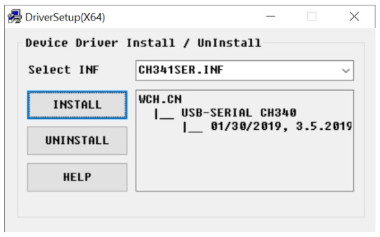
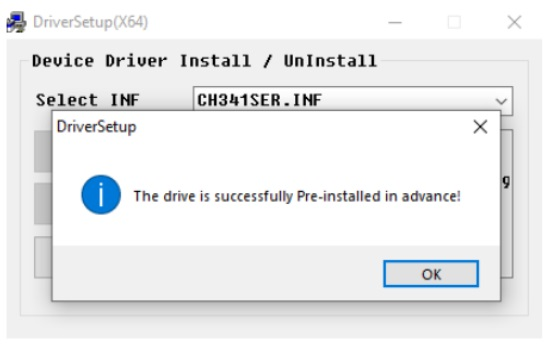
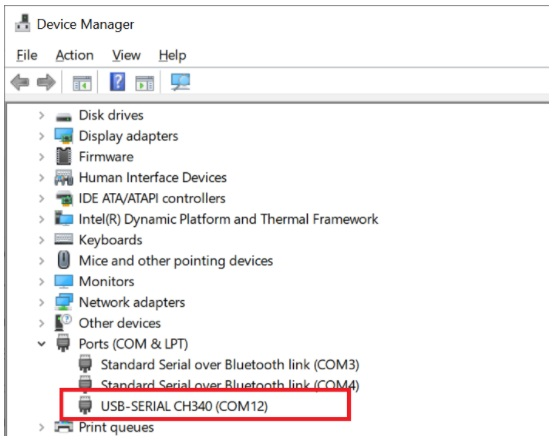

Cài đặt Driver¶
Để máy tính có thể giao tiếp và lập trình được cho Yolo:Bit, bạn cần cài đặt driver trước. Để cài đặt, bạn làm theo các bước sau:
Bước 1. Tải file cài đặt driver cho chip giao tiếp USB CH340G có trên xController tại Driver CH340
Bước 2. Giải nén file đã được download và chạy file CH341SER.EXE để tiến hành cài đặt.
Bước 3. Click vào INSTALL:
Bước 4. Sau khi cài đặt xong, màn hình sẽ hiển thị: “The drive is successfully Pre-install in advance” như hình. Lúc này, bạn hãy nhấn vào “OK” và tắt app.
Bước 5. Tiếp theo, bạn hãy kết nối Yolo:Bit với máy tính bằng cáp micro USB.
Dành cho người dùng hệ điều hành Windows: Bạn có thể vào phần Device Manager. Trong phần Ports (COM & LPT), bạn sẽ thấy một cổng COM mới mỗi khi kết nối USB với xController. Cổng này sẽ biến mất khi rút cáp USB ra.
Dành cho người dùng hệ điều hành macOS: Bạn có thể nhấn vào biểu tượng trái táo, chọn mục About this Mac -> System Report… -> USB. CH341SER USB Driver sẽ xuất hiện tại đây.
{kind=link}
{kind=link}
{kind=link}
Nếu driver chưa được cài đặt, hoặc cài đặt chưa thành công, máy tính sẽ hiển thị “unknown device” tại mục Device Manager. Trong trường hợp này, bạn cần phải tải về và cài lại driver.